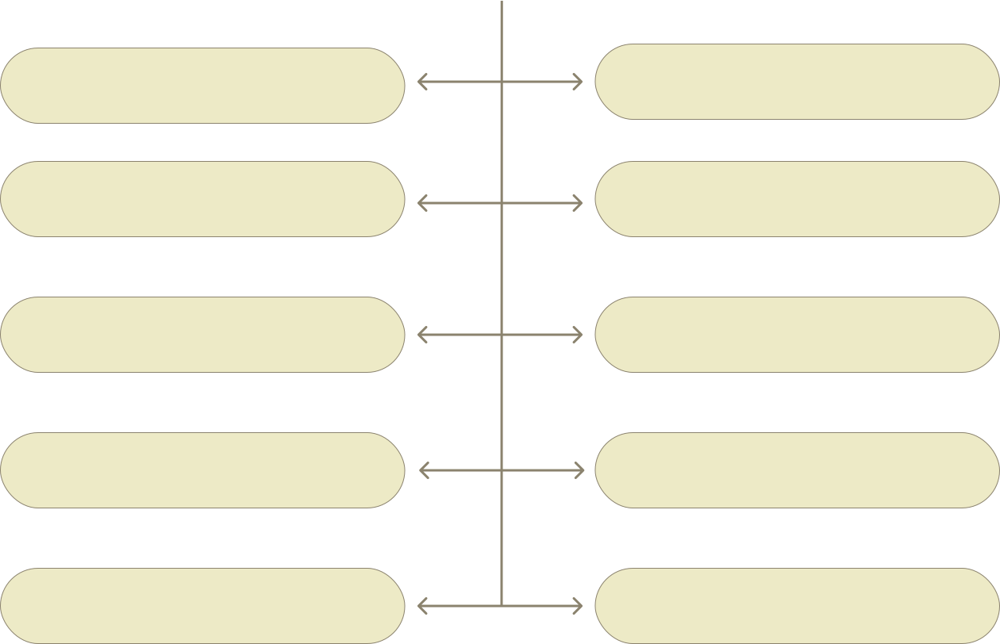

Философия – (от греч. Phileo – люблю; sophia – мудрость) – любовь к мудрости. Философия – есть общее знание, принципы которого не могут быть выводами из какого – нибудь другого знания, еще более общего. Исходя из этого, предмет философии – «всеобщее». Специфическим для философии является не знание о мире как таковом, хотя она включает и такое знание, а знание об отношениях, отношениях человека к миру. При этом речь идет не о любых, а о всеобщих отношениях. Это такие общие (всеобщие) понятия, которые употребляют все науки, но не анализируют их как понятия (например, что есть «качество», «причина», «истина», «время», «пространство» и другие), а просто их используют. Философ, словно ювелир, собирает лучшие жемчужины в ожерелье, чтобы ими могли насладиться все без исключения.
Философия изучает мир во всей целостности, охватывает все, что существует в человеческом сознании. Вот почему отношение к философии среди не философов очень противоречиво. Одни, от философии ожидают чрезвычайных откровений, другие – равнодушно игнорировать ее как беспредметное мышление, третируют её как бесполезные раздумья о чем – то призрачном; третьи взирают на философскую науку с робостью, видя в ней значительные усилия необыкновенных людей – гениев, изображают ее настолько трудной, что само занятие ею представляется безнадежным. А может в этом и есть «тайна философии»? Однако без философского понимания – нет истинной научной картины мира.
ФУНКЦИИ ФИЛОСОФИИ
